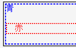

border-colorプロパティを省略したときのボーダーの色は要素内の前景色と同一になると規定されているが、Operaは常に#000000でボーダーを描画してしまう。
<div style="border:2px dashed; color:blue;">青 <p style="border:2px dotted; color:red;">赤</p> </div>
赤
borderプロパティで、色の指定だけを省略しました。外側のボーダー（破線）は青、内側のボーダー（点線）は赤色で描画されるはずです。
WinIE6.0での表示
Opera6.05での表示
Opera6.05では不具合の発生が確認されました。Opera7.0では標準・互換モードともに不具合の発生は確認されませんでした。